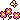

credits
all of the artists that created my assets are listed below. please check them out and consider commissioning them as well!
 model credits
2.1 3D Model: Mokunachoi
2.0 L2D Model Art: Vita
2.0 L2D Model Rigging: Emi
1.1 PNG Tuber: Chelsea
1.0 L2D Model Art: Soir
1.0 L2D Model Rigging: LadyInfel
asset credits
Follower Emote (Bab): Rhiz
Follower Emote (Comfy): Demialien
Follower Emote (Nerd): Yeahyerm
Follower/Sub Emotes (Love, Happy, Sadge, Cry, Despair): Roaru
Follower/Sub Emotes (Laugh, Angry, Disgust, Headpat, Shy, Lurk, Dance): Morrigh
Sub Emote (Ramble): Shikyoken
Sub Emote (Cat): MamaRoseVT
Sub Emote (Hold, Holdb): Aki
Sub Emote (LFG, LFGG): Fream
Sub Emote (CHAD): Bepipi
Sub Emote (Yippie): Cakepawzz
Sub Emote (Load, Dead, Noted, Angry): Noemi
Sub Emote (Bocchi, Bocch, Wat): Chan Sama
Sub Emote (Cheer, Jam, Wave): ShiraOu
2.0 Logo: Chuaturyy
1.0 Logo: Starnus
1.0 Reference Sheet: SkylaVT
Twitch Overlays and Panels: Sony
Twitch Room Background: Scar
Twitch Sub Badges: Scrimsart
Twitch Pfp/Neocities index picture: Ponymoe
Youtube Pfp: Dofaliasing
Twitter Pfp: Ultra_d3spair
Twitter Banner: Aeyochi
OBS Stinger: CherryKozue
website credits
all of the resources i used to create this website are listed below.
gifs:


pixel-soup
cutegif
fonts:  novov
novov
cursors: cursors-4u
website backgrounds: studio ghibli scans spirited away imgur scans
current website counter: fc2counter
previous website counter: free website hit counter
current website guestbook: 
old website guestbook: 123guestbook
website button maker: webbuttonmaker
website status post: 
index song 1, hedgehog's dilemma - shiro sagisu (from neon genesis evangelion): hedgehog's dilemma
index song 2, confessio - yuki kajiura (from puella magi madoka magica): confessio
index song 3, white - frank ocean: white
index song 4, sands of blood - masayoshi soken (from ffxiv): sands of blood
about me page song 1, 2000 - vowl: 2000
about me page song 2, monster - lady gaga: monster
about me page song 3, shes my collar - gorillaz: shes my collar
about me page song 4, miniskirt - aoa: miniskirt
journal borders: 
journal calendar: calendar-muryou
journal clock: timeanddate
journal moon phase tracker: wdisseny
living room page song 1, out of touch - daryl hall and john oates: out of touch
living room page song 2, captain jack (short mix) - captain jack: captain jack
living room page song 3, boat - kamaitachi no yoru 2 ost: boat
gradient background, cssgradient: cssgradient
html and css guides: mdn w3schools
// this website is coded by hand with lots of love ( = w =) //